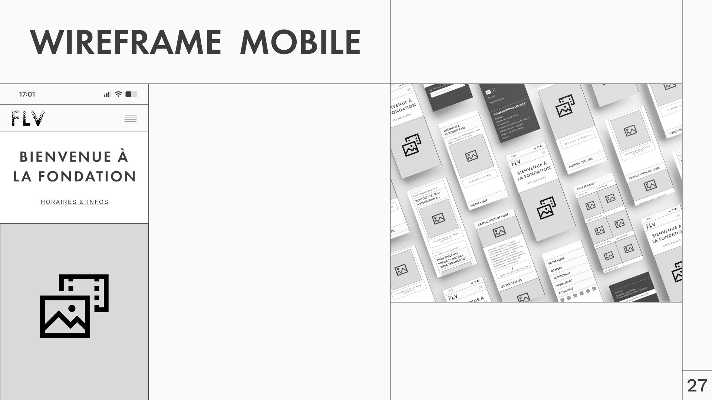
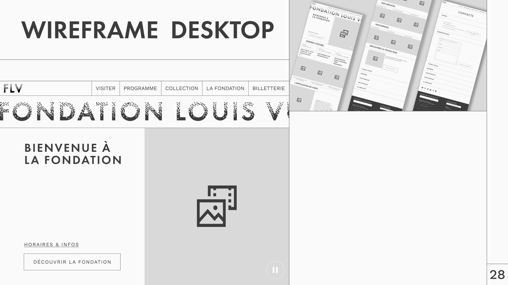
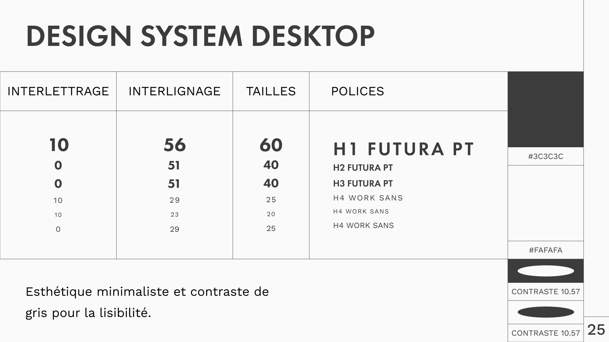
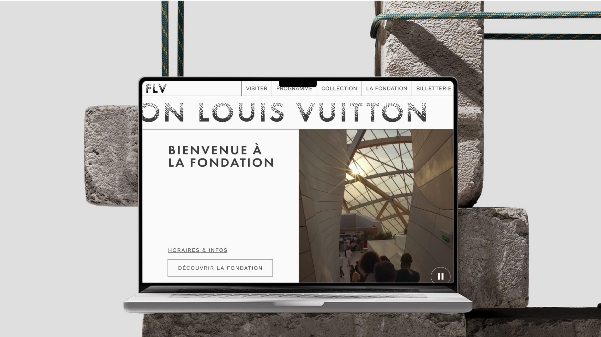
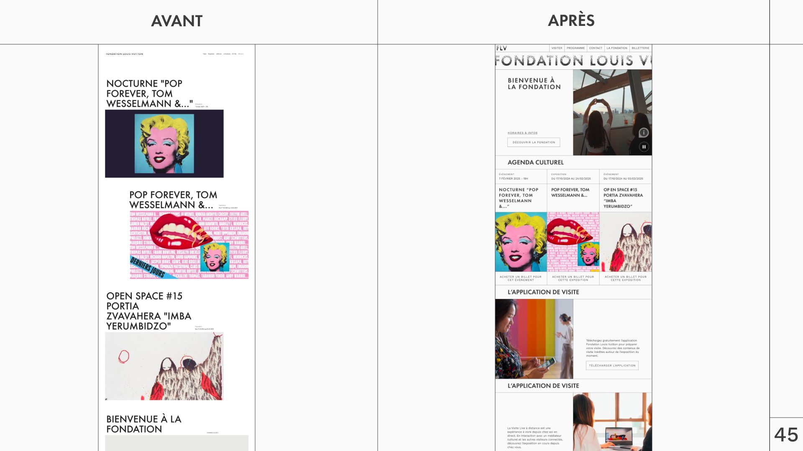
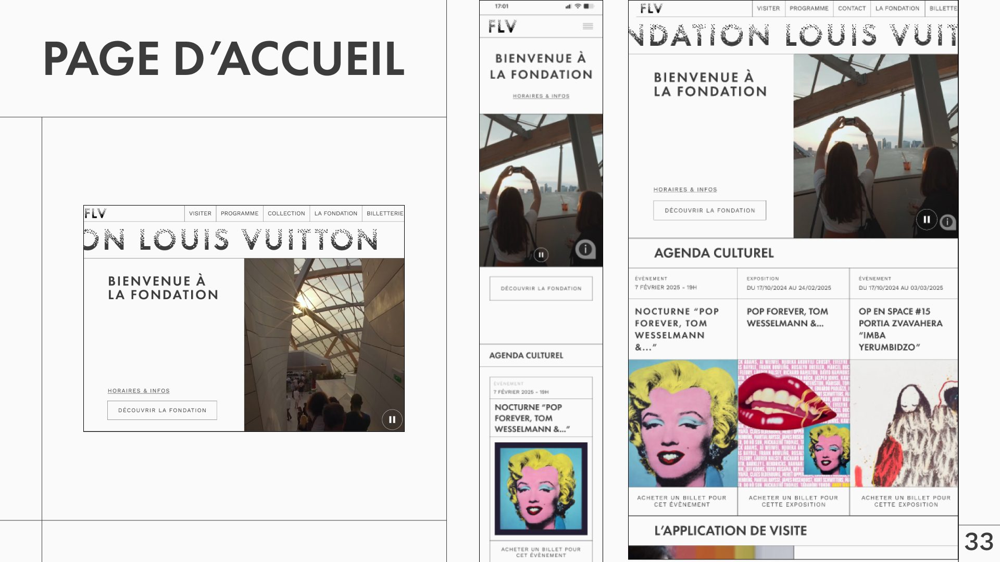
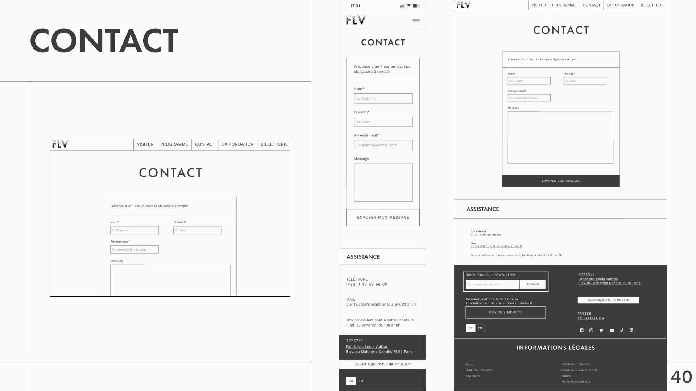
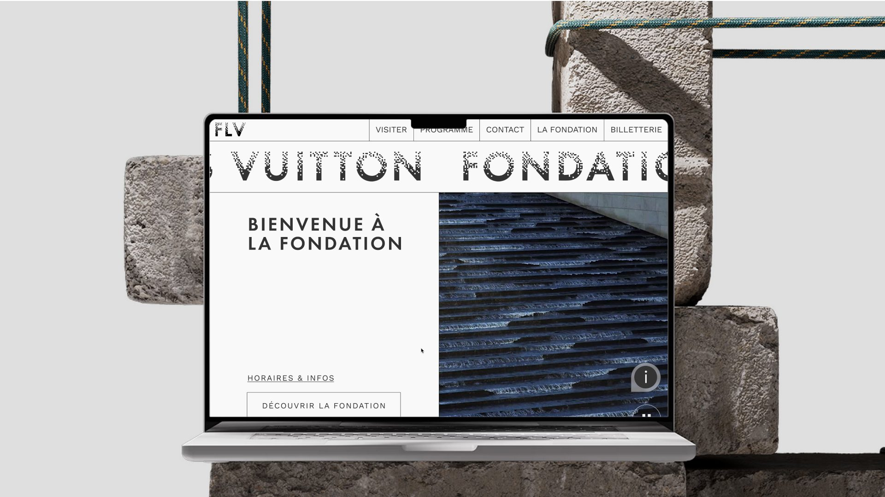
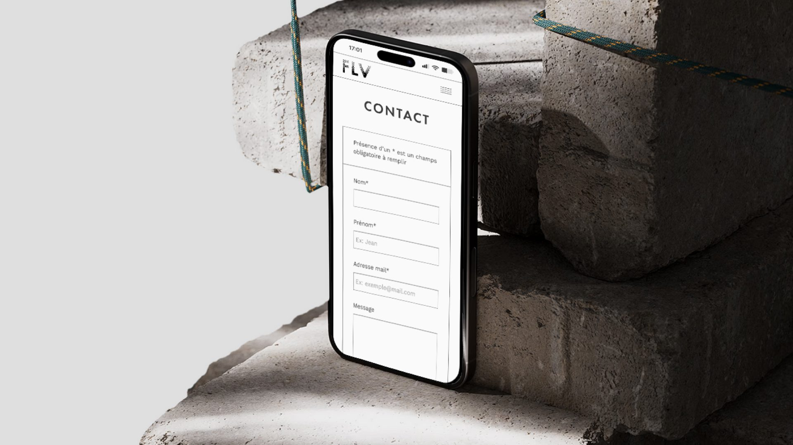

Julien Martin
45 · history teacher
Difficulties
- Informative images without alt text
- Tab order too long
- Low contrast, text too small
Solutions
- Alt text on every useful image
- Fast navigation
- Contrast above 4.5:1, resizable text
UX/UI · Accessibility · Website redesign · 2025
Audit and redesign of the Fondation Louis Vuitton website to make it accessible to people with disabilities.
A prestigious cultural website that many visitors struggle to use.
The brief: audit and rethink a cultural venue’s website around accessibility for people with disabilities. We chose the Fondation Louis Vuitton.
Home page
Oversized text and images; hard to find opening hours and buy a ticket.
Contact page
Hard to reach, and no contact form.
A criterion-by-criterion audit based on the RGAA standard.
Every theme of the French accessibility standard was checked on the site’s key pages, backed by screenshots and criterion numbers.
Colour
Insufficient contrast between text and background.
Non-compliant
Multimedia
Video can’t be paused or hidden; no alternative for time-based media.
Non-compliant
Links
No dedicated style to make links stand out.
Non-compliant
Required elements
No h1 heading on the home page.
Non-compliant
Structure
Illogical heading hierarchy (header, nav, main and footer correctly placed).
Non-compliant
Forms
No contact form; fields without labels or instructions.
Non-compliant
Navigation
No skip link; inconsistent tab order; barely visible focus.
Non-compliant
Images
Logo and informative images have alt text; decorative images are ignored.
Compliant
Presentation
Text stays readable up to 200% zoom.
Compliant
Four personas, four ways of experiencing the site.
Each persona represents a type of disability. For each one, we linked the problems on the current site to the solutions to put in place.
45 · history teacher
Difficulties
Solutions
23 · product designer
Difficulties
Solutions
33 · accountant
Difficulties
Solutions
72 · retired
Difficulties
Solutions
“Julien wants to see the pop art show this weekend. First he needs the opening hours, then a ticket.”
User journey


Design choices made for each disability.
01
Makes tabbing, responsive layouts and text resizing easier.
02
Little text, supported by images and icons.
03
Every button states a precise action.
04
To search the site quickly.
05
Fields visible from the top of the page, understandable error messages.
06
Links and buttons outlined on hover and when tabbing.
07
To jump straight to the main features.
Design system
A minimal look: Futura PT for headings, Work Sans for text, and a grey contrast designed for legibility.
Contrast ratio 10.57:1, well above the 4.5:1 minimum.

A clearer, more legible site that works with a keyboard.
The key pages were redesigned for desktop and mobile: home, cultural agenda, ticketing and contact.
Figma · Interactive prototype Browse the new site Open in Figma





Next step
Test the mockups with people affected by each disability, using a keyboard and a screen reader, before confirming the design choices.